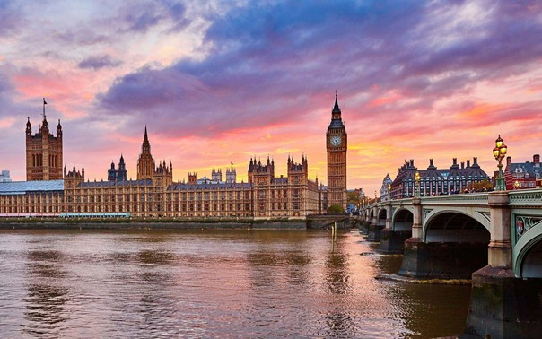
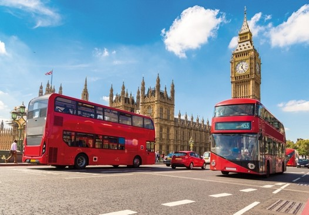
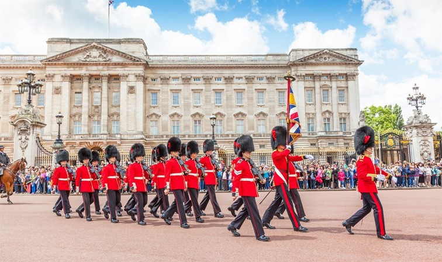

WLondon is unbeatable if you want to spend a whirlwind weekend full of art, culture, good food and shopping. The city's museums and galleries are among the best in the world. With cathedrals, palaces and ancient monuments around every corner, you'll walk through London like you're walking through a history book. But even in each historic slice, you'll discover traces of a modern, ever-changing city.
London is the capital and largest city of England and the United Kingdom. It stands on the River Thames in south-east England at the head of an 80 km estuary down to the North Sea, and has been a major settlement for two millennia. The City of London, its ancient core and financial centre, was founded by the Romans as Londinium and retains boundaries close to its medieval ones. Since the 19th century, "London" has also referred to the metropolis around this core, historically split between the counties of Middlesex, Essex, Surrey, Kent, and Hertfordshire, which largely makes up Greater London, the region governed by the Greater London Authority. The City of Westminster, to the west of the City, has for centuries held the national government and parliament.
Our favorite experiences where old meets new? Stroll around the Whispering Gallery or Whispering Gallery of Saint Paul's Cathedral, then listen to the muffled sounds in Tate Modern. Or still. See the Big Ben panorama from the London Eye and then admire the skyscraper skyline during a break in Greenwich Park.
More of a shopaholic? Head to Oxford Street, browse markets or calm your nerves - and your wallet - at Harrods. For entertainment, head to the West End, the place to be for fine theatre, comedy, dance and musicals.
Fancy a breather with a bite to eat? You'll find goodies from all corners of the world and for every budget. For pure indulgence, book a table at one of the 70 Michelin-starred restaurants, bluff your way into the hippest eateries, lick your thumbs and fingers like a local over a plate of fish-and-chips or fill up on street food.
  